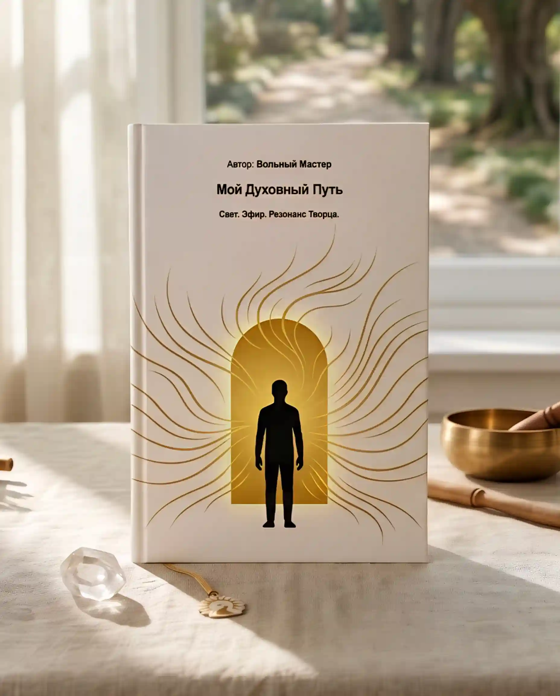
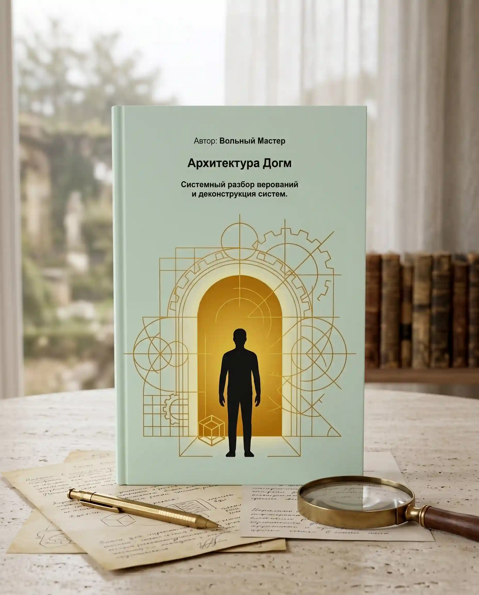

Трилогия Суверенитета
Единая замкнутая система знаний, ведущая от разрушения иллюзий к прямому управлению реальностью.

Архитектура Догм
Системный разбор верований и деконструкция систем.
Книга-фундамент, детально описывающая предшествующий процесс интеллектуального поиска и духовных странствий. Это глубокий структурный анализ мировых религий, культов и идеологических систем, выполненный с позиции системного архитектора.
Доступна для чтения
Мой Духовный Путь
Свет. Эфир. Резонанс Творца.
Центральный и главный труд трилогии, ставший квинтэссенцией многолетних ментальных трансформаций автора. Книга представляет собой уникальный синтез глубокого личного опыта и строгого научного подхода. Логика как линза, через которую открываются фундаментальные законы Вселенной.
Скачать труд
Физика Намерения
Практика взаимодействия сознания со Вселенной.
Итоговый труд трилогии, содержащий точные прикладные знания и методы взаимодействия со средой, доступные далеко не всем. Темы, которые принято относить к мистике, здесь переведены на язык чистой физики и волнового резонанса.
Доступна для чтения